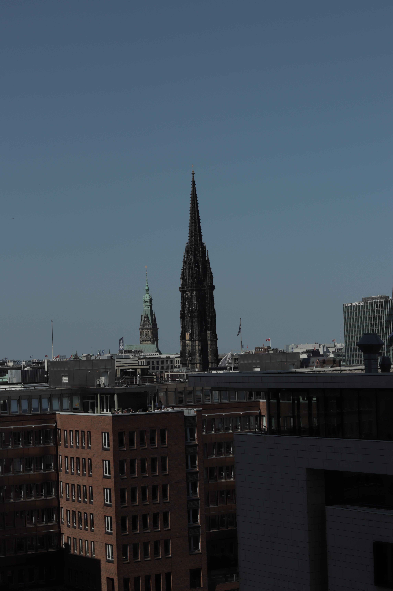
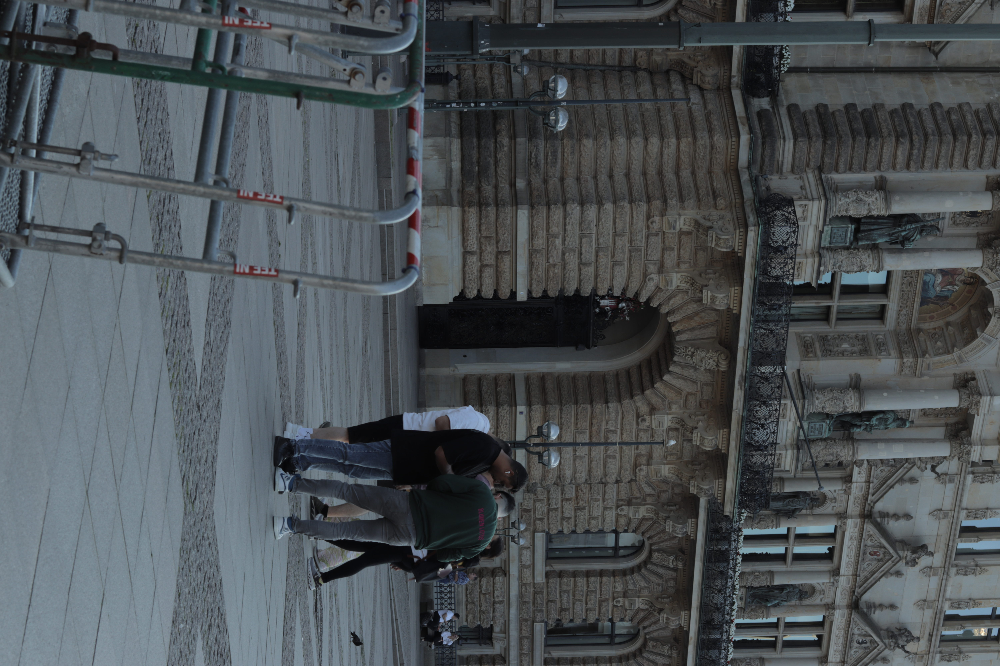
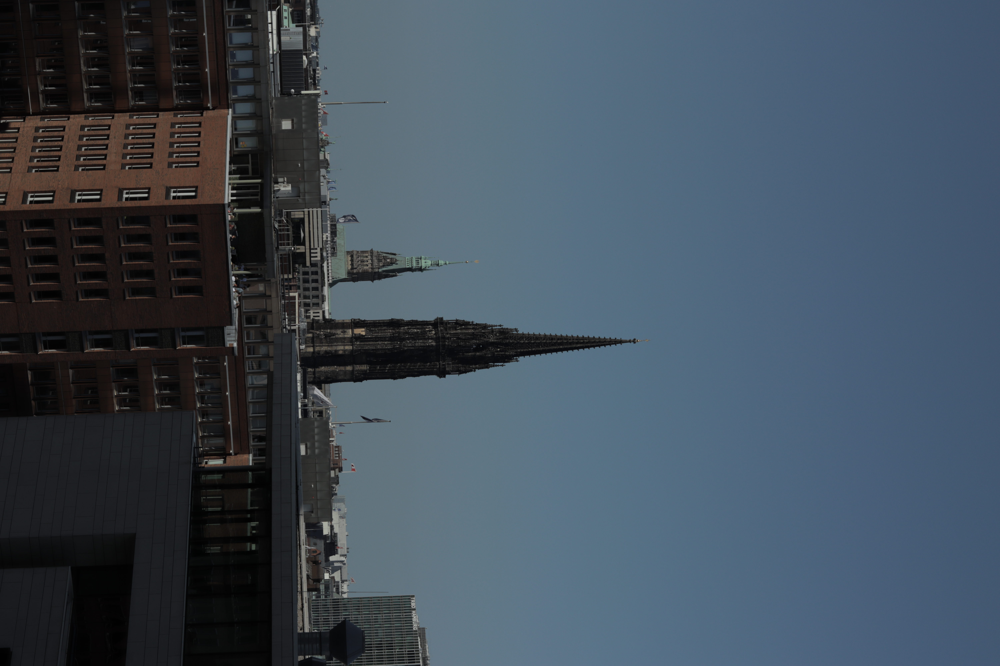

Built
Worlds,
Contested
Ground
Photographs of structures that shape public life — from housing blocks to coastal margins — tracing the line between the built environment and the people it holds.
Recent Dispatches
The gothic memorial spire rising like a sundial through contemporary office blocks.

Temporary crowd control barriers marking the boundary of assembly outside municipal power.

Stratification of brick, glass, and copper roofs along the canal district.
"Every photograph is a decision about what deserves to be looked at. I choose the places that quietly decide how we live — and I make them impossible to walk past again."
Explore the body of work
The Plates Catalog
The complete index of 16 architectural and landscape surveys with interactive category filtering, technical Exif notes, and full-resolution lightbox viewer.
Commentary & Dispatches
Critical essays on built structures as social diagrams, surveyor's orange as the marker of intervention, and public space negotiation.
The Field Dossier
Photographer background, field kit equipment, exhibition history, printing methods, and survey statistics from a decade in the field.